2016年北京市中考数学试题 原卷解析
2016年北京市中考数学试卷
一、选择题（本题共30分，每小题3分）
1．（3分）（2016•北京）如图所示，用量角器度量∠AOB，可以读出∠AOB的度数为（ ）

A．45°B．55°C．125°D．135°
【解答】解：由图形所示，∠AOB的度数为55°，
故选B．

2．（3分）（2016•北京）神舟十号飞船是我国“神州”系列飞船之一，每小时飞行约28000公里，将28000用科学记数法表示应为（ ）
A．2.8×103B．28×103C．2.8×104D．0.28×105
【解答】解：28000=1.1×104．
故选：C．
3．（3分）（2016•北京）实数a，b在数轴上的对应点的位置如图所示，则正确的结论是（ ）

A．a＞﹣2B．a＜﹣3C．a＞﹣bD．a＜﹣b
【解答】解：A、如图所示：﹣3＜a＜﹣2，故此选项错误；
B、如图所示：﹣3＜a＜﹣2，故此选项错误；
C、如图所示：1＜b＜2，则﹣2＜﹣b＜﹣1，故a＜﹣b，故此选项错误；
D、由选项C可得，此选项正确．
故选：D．
4．（3分）（2016•北京）内角和为540°的多边形是（ ）
A． B．
B． C．
C． D．
D．
【解答】解：设多边形的边数是n，则
（n﹣2）•180°=540°，
解得n=5．
故选：C．
5．（3分）（2016•北京）如图是某个几何体的三视图，该几何体是（ ）

A．圆锥B．三棱锥C．圆柱D．三棱柱
【解答】解：根据主视图和左视图为矩形判断出是柱体，根据俯视图是三角形可判断出这个几何体应该是三棱柱．
故选D
6．（3分）（2016•北京）如果a+b=2，那么代数（a﹣ ）•
）• 的值是（ ）
的值是（ ）
A．2B．﹣2C． D．﹣
D．﹣
【解答】解：∵a+b=2，
∴原式= •=a+b=2
•=a+b=2
故选：A．
7．（3分）（2016•北京）甲骨文是我国的一种古代文字，是汉字的早期形式，下列甲骨文中，不是轴对称的是（ ）
A． B．
B． C．
C． D．
D．
【解答】解：A、是轴对称图形，故本选项错误；
B、是轴对称图形，故本选项错误；
C、是轴对称图形，故本选项错误；
D、不是轴对称图形，故本选项正确．
故选D．
8．（3分）（2016•北京）在1﹣7月份，某种水果的每斤进价与出售价的信息如图所示，则出售该种水果每斤利润最大的月份是（ ）

A．3月份B．4月份C．5月份D．6月份
【解答】解：由图象中的信息可知，3月份的利润=7.5﹣4.5=3元，
4月份的利润=6﹣2.4=3.6元，
5月份的利润=4.5﹣1.5=3元，
5月份的利润=2.5﹣1=1.5元，
故出售该种水果每斤利润最大的月份是4月份，
故选B．
9．（3分）（2016•北京）如图，直线m⊥n，在某平面直角坐标系中，x轴∥m，y轴∥n，点A的坐标为（﹣4，2），点B的坐标为（2，﹣4），则坐标原点为（ ）

A．O1B．O2C．O3D．O4
【解答】解：设过A、B的直线解析式为y=kx+b
∵点A的坐标为（﹣4，2），点B的坐标为（2，﹣4）
∴
解得
∴直线AB为y=﹣x﹣2
∴直线AB经过第二、三、四象限
如图，连接AB，则原点在AB的右上方

∴坐标原点为O1
故选（A）
10．（3分）（2016•北京）为了节约水资源，某市准备按照居民家庭年用水量实行阶梯水价．水价分档递增，计划使第一档、第二档和第三档的水价分别覆盖全市居民家庭的80%，15%和5%，为合理确定各档之间的界限，随机抽查了该市5万户居民家庭上一年的年用水量（单位：m3），绘制了统计图．如图所示，下面四个推断合理的是（ ）
①年用水量不超过180m3的该市居民家庭按第一档水价交费；
②年用水量超过240m3的该市居民家庭按第三档水价交费；
③该市居民家庭年用水量的中位数在150﹣180之间；
④该市居民家庭年用水量的平均数不超过180．

A．①③B．①④C．②③D．②④
【解答】解：①由条形统计图可得：年用水量不超过180m3的该市居民家庭一共有（0.25+0.75+1.5+1.0+0.5）=4（万），
 ×100%=80%，故年用水量不超过180m3的该市居民家庭按第一档水价交费，正确；
×100%=80%，故年用水量不超过180m3的该市居民家庭按第一档水价交费，正确；
②∵年用水量超过240m3的该市居民家庭有（0.15+0.15+0.05）=0.35（万），
∴ ×100%=7%≠5%，故年用水量超过240m3的该市居民家庭按第三档水价交费，故此选项错误；
×100%=7%≠5%，故年用水量超过240m3的该市居民家庭按第三档水价交费，故此选项错误；
③∵5万个数数据的中间是第25000和25001的平均数，
∴该市居民家庭年用水量的中位数在120﹣150之间，故此选项错误；
④由①得，该市居民家庭年用水量的平均数不超过180，正确，
故选：B．
二、填空题（本题共18分，每小题3分）
11．（3分）（2016•北京）如果分式
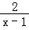
有意义，那么x的取值范围是 x≠1 ．【解答】解：由题意，得
x﹣1≠0，
解得x≠1，
故答案为：x≠1．
12．（3分）（2016•北京）如图中的四边形均为矩形，根据图形，写出一个正确的等式 am+bm+cm=m（a+b+c） ．
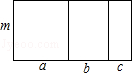
【解答】解：由题意可得：am+bm+cm=m（a+b+c）．
故答案为：am+bm+cm=m（a+b+c）．
13．（3分）（2016•北京）林业部门要考察某种幼树在一定条件下的移植成活率，下表是这种幼树在移植过程中的一组数据：
移植的棵数n | 1000 | 1500 | 2500 | 4000 | 8000 | 15000 | 20000 | 30000 |
成活的棵数m | 865 | 1356 | 2220 | 3500 | 7056 | 13170 | 17580 | 26430 |
成活的频率 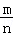 | 0.865 | 0.904 | 0.888 | 0.875 | 0.882 | 0.878 | 0.879 | 0.881 |
估计该种幼树在此条件下移植成活的概率为 0.882 ．
【解答】解：=（0.865+0.904+0.888+0.875+0.882+0.878+0.879+0.881）÷8=0.882，
∴这种幼树移植成活率的概率约为0.882．
故答案为：0.882
14．（3分）（2016•北京）如图，小军、小珠之间的距离为2.7m，他们在同一盏路灯下的影长分别为1.8m，1.5m，已知小军、小珠的身高分别为1.8m，1.5m，则路灯的高为 3 m．
【解答】解：如图，∵CD∥AB∥MN，
∴△ABE∽△CDE，△ABF∽△MNF，
∴
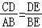
，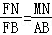
，即
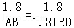
，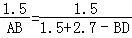
，解得：AB=3m，
答：路灯的高为3m．
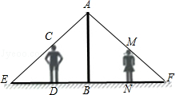
15．（3分）（2016•北京）百子回归图是由1，2，3…，100无重复排列而成的正方形数表，它是一部数化的澳门简史，如：中央四位“19 99 12 20”标示澳门回归日期，最后一行中间两位“23 50”标示澳门面积，…，同时它也是十阶幻方，其每行10个数之和，每列10个数之和，每条对角线10个数之和均相等，则这个和为 505 ．
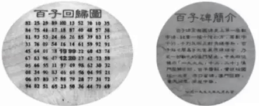
【解答】解：1～100的总和为：
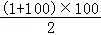
=5050，一共有10行，且每行10个数之和均相等，所以每行10个数之和为：5050÷10=505，
故答案为：505．
16．（3分）（2016•北京）下面是“经过已知直线外一点作这条直线的垂线”的尺规作图过程：
已知：直线l和l外一点P．（如图1）
求作：直线l的垂线，使它经过点P．
作法：如图2
（1）在直线l上任取两点A，B；
（2）分别以点A，B为圆心，AP，BP长为半径作弧，两弧相交于点Q；
（3）作直线PQ．
所以直线PQ就是所求的垂线．
请回答：该作图的依据是 到线段两个端点的距离相等的点在线段的垂直平分线上（A、B都在线段PQ的垂直平分线上） ．
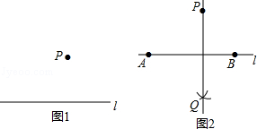
【解答】解：到线段两个端点的距离相等的点在线段的垂直平分线上（A、B都在线段PQ的垂直平分线上），
理由：如图，∵PA=PQ，PB=PB，
∴点A、点B在线段PQ的垂直平分线上，
∴直线AB垂直平分线段PQ，
∴PQ⊥AB．
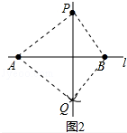
三、解答题（本题共72分，第17-26题，每小题5分，第27题7分，第28题7分，第29题8分），解答时应写出文字说明、演算步骤或证明过程
17．（5分）（2016•北京）计算：（3﹣π）0+4sin45°﹣
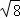
+|1﹣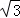
|．【解答】解：（3﹣π）0+4sin45°﹣+|1﹣
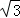
|=1+4×
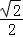
﹣2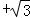
﹣1=1
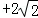
﹣2+﹣1=
18．（5分）（2016•北京）解不等式组： ．
．
【解答】解：解不等式2x+5＞3（x﹣1），得：x＜8，
解不等式4x＞ ，得：x＞1，
，得：x＞1，
∴不等式组的解集为：1＜x＜8．
19．（5分）（2016•北京）如图，四边形ABCD是平行四边形，AE平分∠BAD，交DC的延长线于点E．求证：DA=DE．
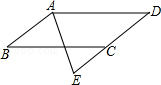
【解答】证明：∵四边形ABCD是平行四边形，
∴AB∥CD，
∴∠E=∠BAE，
∵AE平分∠BAD，
∴∠BAE=∠DAE，
∴∠E=∠DAE，
∴DA=DE．
20．（5分）（2016•北京）关于x的一元二次方程x2+（2m+1）x+m2﹣1=0有两个不相等的实数根．
（1）求m的取值范围；
（2）写出一个满足条件的m的值，并求此时方程的根．
【解答】解：（1）∵关于x的一元二次方程x2+（2m+1）x+m2﹣1=0有两个不相等的实数根，
∴△=（2m+1）2﹣4×1×（m2﹣1）=4m+5＞0，
解得：m＞﹣ ．
．
（2）m=1，此时原方程为x2+3x=0，
即x（x+3）=0，
解得：x1=0，x2=﹣3．
21．（5分）（2016•北京）如图，在平面直角坐标系xOy中，过点A（﹣6，0）的直线l1与直线l2：y=2x相交于点B（m，4）．
（1）求直线l1的表达式；
（2）过动点P（n，0）且垂于x轴的直线与l1，l2的交点分别为C，D，当点C位于点D上方时，写出n的取值范围．

【解答】解：（1）∵点B在直线l2上，
∴4=2m，
∴m=2，点B（2，4）
设直线l1的表达式为y=kx+b，
由题意 ，解得
，解得 ，
，
∴直线l1的表达式为y= x+3．
x+3．
（2）与图象可知n＜2．
22．（5分）（2016•北京）调查作业：了解你所在小区家庭5月份用气量情况：
小天、小东和小芸三位同学住在同一小区，该小区共有300户家庭，每户家庭人数在2﹣5之间，这300户家庭的平均人数均为3.4．
小天、小东和小芸各自对该小区家庭5月份用气量情况进行了抽样调查，将收集的数据进行了整理，绘制的统计表分别为表1，表2和表3．
表1 抽样调查小区4户家庭5月份用气量统计表 （单位：m3）
表2 抽样调查小区15户家庭5月份用气量统计表 （单位：m3）
家庭人数 | 2 | 2 | 2 | 3 | 3 | 3 | 3 | 3 | 3 | 3 | 3 | 3 | 3 | 3 | 4 |
用气量 | 10 | 11 | 15 | 13 | 14 | 15 | 15 | 17 | 17 | 18 | 18 | 18 | 18 | 20 | 22 |
表3 抽样调查小区15户家庭5月份用气量统计表 （单位：m3）
家庭人数 | 2 | 2 | 2 | 3 | 3 | 3 | 3 | 3 | 3 | 4 | 4 | 4 | 4 | 5 | 5 |
用气量 | 10 | 12 | 13 | 14 | 17 | 17 | 18 | 19 | 20 | 20 | 22 | 26 | 31 | 28 | 31 |
根据以上材料回答问题：
小天、小东和小芸三人中，哪一位同学抽样调查的数据能较好地反映该小区家庭5月份用气量情况，并简要说明其他两位同学抽样调查的不足之处．
【解答】解：小芸，小天调查的人数太少，小东抽样的调查数据中，家庭人数的平均值为：
（2×3+3×11+4）÷15=2.87，
远远偏离了平均人数的3.4，所以他的数据抽样有明显的问题，
小芸抽样的调查数据中，家庭人数的平均值为：（2×2+3×7+4×4+5×2）÷15=3.4，
说明小芸抽样数据质量较好，因此小芸的抽样调查的数据能较好的反应出该小区家庭5月份用气量情况．
23．（5分）（2016•北京）如图，在四边形ABCD中，∠ABC=90°，AC=AD，M，N分别为AC，CD的中点，连接BM，MN，BN．
（1）求证：BM=MN；
（2）∠BAD=60°，AC平分∠BAD，AC=2，求BN的长．

【解答】（1）证明：在△CAD中，∵M、N分别是AC、CD的中点，
∴MN∥AD，MN= AD，
AD，
在RT△ABC中，∵M是AC中点，
∴BM=AC，
∵AC=AD，
∴MN=BM．
（2）解：∵∠BAD=60°，AC平分∠BAD，
∴∠BAC=∠DAC=30°，
由（1）可知，BM=AC=AM=MC，
∴∠BMC=∠BAM+∠ABM=2∠BAM=60°，
∵MN∥AD，
∴∠NMC=∠DAC=30°，
∴∠BMN=∠BMC+∠NMC=90°，
∴BN2=BM2+MN2，
由（1）可知MN=BM=AC=1，
∴BN=
24．（5分）（2016•北京）阅读下列材料：
北京市正围绕着“政治中心、文化中心、国际交往中心、科技创新中心”的定位，深入实施“人文北京、科技北京、绿色北京”的发展战略．“十二五”期间，北京市文化创意产业展现了良好的发展基础和巨大的发展潜力，已经成为首都经济增长的支柱产业．
2011年，北京市文化创意产业实现增加值1938.6亿元，占地区生产总值的12.2%．2012年，北京市文化创意产业继续呈现平稳发展态势，实现产业增加值2189.2亿元，占地区生产总值的12.3%，是第三产业中仅次于金融业、批发和零售业的第三大支柱产业．2013年，北京市文化产业实现增加值2406.7亿元，比上年增长9.1%，文化创意产业作为北京市支柱产业已经排到了第二位．2014年，北京市文化创意产业实现增加值2749.3亿元，占地区生产总值的13.1%，创历史新高，2015年，北京市文化创意产业发展总体平稳，实现产业增加值3072.3亿元，占地区生产总值的13.4%．
根据以上材料解答下列问题：
（1）用折线图将2011﹣2015年北京市文化创意产业实现增加值表示出来，并在图中标明相应数据；
（2）根据绘制的折线图中提供的信息，预估2016年北京市文化创意产业实现增加值约 3471.7 亿元，你的预估理由 用近3年的平均增长率估计2016年的增长率 ．
【解答】解：（1）2011﹣2015年北京市文化创意产业实现增加值如图所示，

（2）设2013到2015的平均增长率为x，
则2406.7（1+x）2=3072.3，
解得x≈13%，
用近3年的平均增长率估计2016年的增长率，
∴2016年的增长率为3072.3×（1+13%）≈3471.7亿元．
故答案分别为3471.7，用近3年的平均增长率估计2016年的增长率．
25．（5分）（2016•北京）如图，AB为⊙O的直径，F为弦AC的中点，连接OF并延长交 于点D，过点D作⊙O的切线，交BA的延长线于点E．
于点D，过点D作⊙O的切线，交BA的延长线于点E．
（1）求证：AC∥DE；
（2）连接CD，若OA=AE=a，写出求四边形ACDE面积的思路．

【解答】（1）证明：∵ED与⊙O相切于D，
∴OD⊥DE，
∵F为弦AC中点，
∴OD⊥AC，
∴AC∥DE．
（2）解：作DM⊥OA于M，连接CD，CO，AD．
首先证明四边形ACDE是平行四边形，根据S平行四边形ACDE=AE•DM，只要求出DM即可．
∵AC∥DE，AE=AO，
∴OF=DF，
∵AF⊥DO，
∴AD=AO，
∴AD=AO=OD，
∴△ADO是等边三角形，同理△CDO也是等边三角形，
∴∠CDO=∠DOA=60°，AE=CD=AD=AO=DD=a，
∴AO∥CD，又AE=CD，
∴四边形ACDE是平行四边形，易知DM= a，
a，
∴平行四边形ACDE面积=a2．

26．（5分）（2016•北京）已知y是x的函数，自变量x的取值范围x＞0，下表是y与x的几组对应值：
x | … | 1 | 2 | 3 | 5 | 7 | 9 | … |
y | … | 1.98 | 3.95 | 2.63 | 1.58 | 1.13 | 0.88 | … |
小腾根据学习函数的经验，利用上述表格所反映出的y与x之间的变化规律，对该函数的图象与性质进行了探究．
下面是小腾的探究过程，请补充完整：
（1）如图，在平面直角坐标系xOy中，描出了以上表格中各对对应值为坐标的点，根据描出的点，画出该函数的图象；
（2）根据画出的函数图象，写出：
①x=4对应的函数值y约为 2 ；
②该函数的一条性质： 该函数有最大值 ．
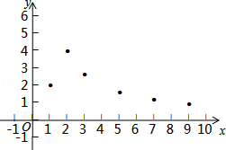
【解答】解：（1）如图，
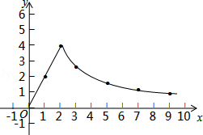
（2）①x=4对应的函数值y约为2.0；
②该函数有最大值．
故答案为2，该函数有最大值．
27．（7分）（2016•北京）在平面直角坐标系xOy中，抛物线y=mx2﹣2mx+m﹣1（m＞0）与x轴的交点为A，B．
（1）求抛物线的顶点坐标；
（2）横、纵坐标都是整数的点叫做整点．
①当m=1时，求线段AB上整点的个数；
②若抛物线在点A，B之间的部分与线段AB所围成的区域内（包括边界）恰有6个整点，结合函数的图象，求m的取值范围．
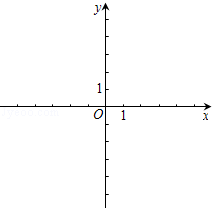
【解答】解：（1）∵y=mx2﹣2mx+m﹣1=m（x﹣1）2﹣1，
∴抛物线顶点坐标（1，﹣1）．
（2）①∵m=1，
∴抛物线为y=x2﹣2x，
令y=0，得x=0或2，不妨设A（0，0），B（2，0），
∴线段AB上整点的个数为3个．
②如图所示，抛物线在点A，B之间的部分与线段AB所围成的区域内（包括边界）恰有6个整点，
∴点A在（﹣1，0）与（﹣2，0）之间（包括（﹣1，0）），
当抛物线经过（﹣1，0）时，m=
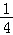
，当抛物线经过点（﹣2，0）时，m=
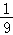
，∴m的取值范围为＜m≤
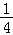
．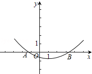
28．（7分）（2016•北京）在等边△ABC中，

（1）如图1，P，Q是BC边上的两点，AP=AQ，∠BAP=20°，求∠AQB的度数；
（2）点P，Q是BC边上的两个动点（不与点B，C重合），点P在点Q的左侧，且AP=AQ，点Q关于直线AC的对称点为M，连接AM，PM．
①依题意将图2补全；
②小茹通过观察、实验提出猜想：在点P，Q运动的过程中，始终有PA=PM，小茹把这个猜想与同学们进行交流，通过讨论，形成了证明该猜想的几种想法：
想法1：要证明PA=PM，只需证△APM是等边三角形；
想法2：在BA上取一点N，使得BN=BP，要证明PA=PM，只需证△ANP≌△PCM；
想法3：将线段BP绕点B顺时针旋转60°，得到线段BK，要证PA=PM，只需证PA=CK，PM=CK…
请你参考上面的想法，帮助小茹证明PA=PM（一种方法即可）．
【解答】解：（1）∵AP=AQ，
∴∠APQ=∠AQP，
∴∠APB=∠AQC，
∵△ABC是等边三角形，
∴∠B=∠C=60°，
∴∠BAP=∠CAQ=20°，
∴∠AQB=∠APQ=∠BAP+∠B=80°；
（2）如图2，∵AP=AQ，
∴∠APQ=∠AQP，
∴∠APB=∠AQC，
∵△ABC是等边三角形，
∴∠B=∠C=60°，
∴∠BAP=∠CAQ，
∵点Q关于直线AC的对称点为M，
∴AQ=AM，∠QAC=∠MAC，
∴∠MAC=∠BAP，
∴∠BAP+∠PAC=∠MAC+∠CAP=60°，
∴∠PAM=60°，
∵AP=AQ，
∴AP=AM，
∴△APM是等边三角形，
∴AP=PM．

29．（8分）（2016•北京）在平面直角坐标系xOy中，点P的坐标为（x1，y1），点Q的坐标为（x2，y2），且x1≠x2，y1≠y2，若P，Q为某个矩形的两个顶点，且该矩形的边均与某条坐标轴垂直，则称该矩形为点P，Q的“相关矩形”，如图为点P，Q的“相关矩形”示意图．
（1）已知点A的坐标为（1，0），
①若点B的坐标为（3，1），求点A，B的“相关矩形”的面积；
②点C在直线x=3上，若点A，C的“相关矩形”为正方形，求直线AC的表达式；
（2）⊙O的半径为 ，点M的坐标为（m，3），若在⊙O上存在一点N，使得点M，N的“相关矩形”为正方形，求m的取值范围．
，点M的坐标为（m，3），若在⊙O上存在一点N，使得点M，N的“相关矩形”为正方形，求m的取值范围．
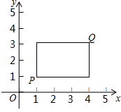
【解答】解：（1）①∵A（1，0），B（3，1）
由定义可知：点A，B的“相关矩形”的底与高分别为2和1，
∴点A，B的“相关矩形”的面积为2×1=2；
②由定义可知：AC是点A，C的“相关矩形”的对角线，
又∵点A，C的“相关矩形”为正方形
∴直线AC与x轴的夹角为45°，
设直线AC的解析为：y=x+m或y=﹣x+n
把（1，0）分别y=x+m，
∴m=﹣1，
∴直线AC的解析为：y=x﹣1，
把（1，0）代入y=﹣x+n，
∴n=1，
∴y=﹣x+1，
综上所述，若点A，C的“相关矩形”为正方形，直线AC的表达式为y=x﹣1或y=﹣x+1；
（2）设直线MN的解析式为y=kx+b，
∵点M，N的“相关矩形”为正方形，
∴由定义可知：直线MN与x轴的夹角为45°，
∴k=±1，
∵点N在⊙O上，
∴当直线MN与⊙O有交点时，点M，N的“相关矩形”为正方形，
当k=1时，
作⊙O的切线AD和BC，且与直线MN平行，
其中A、C为⊙O的切点，直线AD与y轴交于点D，直线BC与y轴交于点B，
连接OA，OC，
把M（m，3）代入y=x+b，
∴b=3﹣m，
∴直线MN的解析式为：y=x+3﹣m
∵∠ADO=45°，∠OAD=90°，
∴OD=
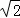
OA=2，∴D（0，2）
同理可得：B（0，﹣2），
∴令x=0代入y=x+3﹣m，
∴y=3﹣m，
∴﹣2≤3﹣m≤2，
∴1≤m≤5，
当k=﹣1时，把M（m，3）代入y=﹣x+b，
∴b=3+m，
∴直线MN的解析式为：y=x+3+m，
同理可得：﹣2≤3+m≤2，
∴﹣5≤m≤﹣1；
综上所述，当点M，N的“相关矩形”为正方形时，m的取值范围是：1≤m≤5或﹣5≤m≤﹣1
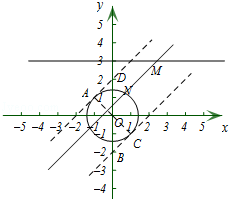